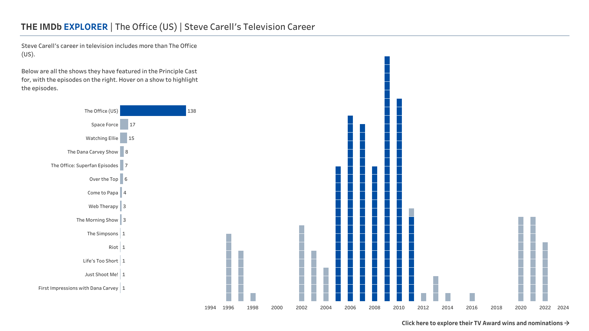

A Spotlight on Design
When I started using Tableau, I saw all of the amazing dashboards that people were creating and felt somewhat disappointed looking at my own feeble creations. “I’ll never be as good as these guys”, I said on more than one occasion. Bit by bit, however, my view changed. The more vizzes I saw, the more I understood what made them so good. I was able to incorporate some of these features in my own work. My dashboards began to feature white space where I used to make use of every pixel. My choice of chart types was more informed by the data than an idea I had in my head. My use of colour was deliberate where I used to make everything look like a packet of crayons had exploded on the screen. Below are some details of the thoughts behind the design choices I made in creating the dashboard that won the Iron Viz Final.
The IMDb Explorer takes many of the key elements of great dashboard design and rolls them into one. Let’s take a look, section by section.
Design in the Scatter Plot

Before we get to the chart itself, I want to talk a little bit about the use of text here. I know it’s a lot. It was important for me to have a description of what is in the dashboard somewhere. For the final it wasn’t needed because I was there to guide people through it, but what about when I’m not there? You can have the best designed dashboard in the world, but if no one understands the context of what they are seeing it won’t make the slightest bit of difference. The design of the text was very deliberate, and thought out. For this, and all other text in the dashboard, I used Tableau Medium. This font is slightly larger and bolder than Tableau Book which makes it easier to read and helps it to be visible from further away - like at the back of a room that seats 7,000!
The bubbles on the scatter plot are bold, again trying to be seen by people a long way away. There’s a trick that I use often when creating scatter plot which is to use a dual axis and overlay an empty circle on a filled one to create a two toned shape. The concept is similar here. To save time, I used a pre-created shape that also had a thicker border than Tableau’s native hollow circle allows. This shape reappears again throughout the dashboard, creating a consistent image and theme that ties the whole project together.
On opening the dashboard you see one colour on these dots – IMDb’s iconic yellow. This is not the easiest to see, but with the darker borders I think it is somewhat improved. When you select a dot, you see it turn blue. This blue is the same as in the title and features in the rest of the visualisation. I like to use associations that people already have with colour as it helps defining concepts when your mind already makes the connection. For example, in a visual that looks at election results in the US, it makes sense to use red and blue as these are associated with Republicans and Democrats. It saves you time as you don’t have to explain the colours, and also saves the user time as it isn’t new information that they are trying to process. So what is the blue here? It’s a subtle nod to where my presentation in the final was heading. If you search for The Office, you will find that every boxset copy or promotional poster uses this blue for the title of the show. Jumping ahead a touch, the red that appears on the radial? Cornell Red. Also the red Scranton employees wear to the company picnic. Everything in here is connected in some way.
Design in the Radial Chart

When I was preparing for the final, I looked through visualisations that had been created in previous finals extensively. I wanted to create something that would use what I liked about all of these, and one of those things was a little bit of flair. I have always enjoyed doing things with radials in Tableau. Maybe it’s the part of my brain that wants to prove that all the trigonometry I did as part of my maths degree is useful in my career. Maybe it’s just because radials are awesome.
There is a danger when adding creativity like this to a dashboard – it needs to have a good reason other than just looking cool. In this case, it enabled me to fit more information on the one screen without things getting too bunched up. The axis on the radial was larger than it would have been as a straight line. With that justified, how do you make something like this work so well?
Take what works with normal charts, and apply it to your fancier visual. It’s very hard to follow lines around in a circle without guidelines. Adding gridlines at regular rating intervals removes the need for the user to compute the trends entirely on their own. The lines for the series and season ratings do the same thing, tying each season together and giving you a reference point to compare the individual episode dots to.
The legend that sits in the bottom left acts as a frame for the visual. It’s where the data flows from. The pot at the end of the rainbow, where you find the gold needed to unlock the chart. Legends are hugely important. By building up the visual piece by piece, this legend introduces you to the chart one section at a time. You don’t need to understand it all at once, but it does all slot together to create something very powerful at the end.
When you click from the radial to the next page, bringing the cast into view, the radial spins to take up only half of the screen. This element of the design keeps a reference point there for you. Humans are terrible at remembering what they have just seen, so I wanted to not force you to have to try. The chart comes with you to the next page so that you don’t need to remember what you saw before. It tucks away into the corner to allow space for what it next. As a result, the episodes are all closer to each other. The information on the screen has doubled, but the light feel of the dashboard means that nothing feels squashed.
Design in the Cast Focus



The principle cast list appears to the right of the screen, showing the 15 cast members that IMDb determine are the most influential to the highest number of episodes of your chosen show. This chart is in line with the radial that remains on the left. This is a subtle feature that you could easily overlook. The bottom of the radial chart is perfectly in line with the bottom of the list of cast members. Straight lines put our minds at ease. We don’t need to reconcile things when they all line up already. So much of good design is about reducing cognitive load, and this is one way of achieving that. The blue has also followed us into this chart, though we have introduced bars for the first time. Similar to a scatter plot, a bar chart is something we are so familiar with it needs no explanation. There are a few more in slightly different forms in the rest of the dashboard.
Selecting a single cast member, you are able to see all shows and episodes that they feature in the principle cast list for. On the left is a chart with horizontal bars, each showing the number of episodes of a show that the actor or actress features in. To the right is a chart with vertical bars, with borders making it into a unit chart of sorts. Here it is easy to see which year and actor did the most, but you can also identify individual episodes easily and see additional details. The dark blue features again, highlighting the selected show with a colour you strongly associate it with by this point. There is also a lighter blue that I opted to use where it possibly could have been the yellow from the front page. I think that for some actors that might have resulted in a bit too much yellow in one view!
These colours and chart types come with us to the final chart. Reusing this aspect of the design made building the charts significantly quicker, but also helps keep that association of ideas going. Here we see awards, split into three types: TV awards, Film awards, and Personal awards. TV awards is split further, pulling out any awards applicable to the show that you are focussing on. Other shows are in that light blue we saw on the previous page. The other categories are new, and in many ways should fade into the background more than anything else. For this reason, I opted to use a light grey for these. The shapes on this page take us back to the beginning – the same shape is used, filled and hollow, as in that original scatter plot.
//
Overall, the thing that I like most about the design of this dashboard is the continuity of it. It all flows together, utilising the same colours and styles throughout. Shapes and colours are reused wherever they can be which contributes to the dashboard feeling like one single product. The whitespace around everything makes it feel clean, refreshing, and easy to look at. I hope that I have given you some ideas for how to improve your own designs, or maybe reminded you of an idea you may have forgotten. I know I don’t always think about all of these things all of the time!
Next up on the blog, I’ll take a look at the final element of my IronViz final dashboard. Join me next time for a spotlight on Storytelling where I’ll share some tips for taking a massive dataset and turning it into a story that keeps your audience engaged and crying out for more. If you missed it, make sure you also check out my previous blog - A Spotlight on Analysis.
Take care // Chris